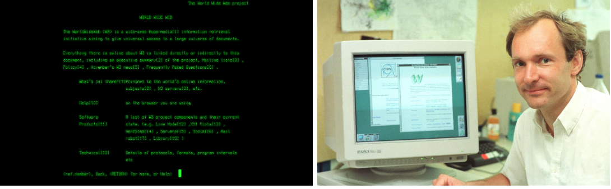

Tim Bernes-Lee, en brittisk forskare, uppfann world wide web (WWW) 1989, medan han arbetade på CERN. Webben var ursprungligen utformad och utvecklad för att möta efterfrågan på automatisk informationsutbyte mellan forskare i universitet och institut runt om i världen. Den första webbplatsen på CERN och i världen var avsedd för world wide web- projektet själva och var värd för Bernes-Lees NeXT-dator. Under 2013 Lanserade CERN ett projekt för att återställa den första hemsidan:
En skärmdump av WWW-projektets sida, psom visar gröntext på en svart bakgrund. En skärmdump av den återskapade sida sidan på den första webbplatsen. Den 30 april 1993 lade CERN world wide web- mjukvara i det offentliga området. Senare gjorde CERN en släpp tillgänglig med en öppen licens, ett mer säkert sätt att maximera spridningen. Dessa åtgärder gjorde det möjligt för webben att blomstra.
Det skapades för att arbeta och utveckla webbstandarden. W3C grundades av Tim Bernes-Lee 1994, efter han hade lämnat sitt jobb på CERN. Det grundades för att göra så att webbplatser du besöker har en viss standard och kriterier. Detta gör de för att din upplevelse på en webbplats ska vara enkel och effektiv. Du ska kunna integrera med webbsidan för att ha det enklare att söka vad du söker på webbsidan. De vill att du ska kunna få en webbsida med kvalité på vilken enhet som helst. De har flera delar av standards: Web Design and Applications: standard och rendering av hemsida, Web Of Devices: Webbtillgänglighet var som helst när som helst
NCSA Mosaic, eller Mosaic, räknas i de flesta fall som den första grafiska webbläsaren. Men det är inte helt sant. Innan Mosaic fanns andra webbläsare som WorldWideWeb, Erwise och ViolaWWW. Dock är Mosaic den första webbläsaren som gör ett stort genombrott. Det var speciellt när Windows-versionen kom i november 1993. Sedan, två år senare har Mosaic en marknadsandel på så mycket som 53 %. Anledningen till att Mosaic blev så poppis var att den gör webbsurfandet bekvämt och njutbart. Från en textbaserad och tråkig aktivitet till en enklare och mer intressant upplevelse när det helt plötsligt grafik, bilder, ljud och video visas samtidigt som texten. Tidigare hade var allt i olika fönster. Mosaic kom i efterhand att utvecklas av National Center för Supercomputing Applications (NCSA) på University of Illinois. Inna utvecklingen av Mosaic lades ner i Januari 1997 hade den redan kommit till version 3.0. Vid den tiden hade konkurrenten Netscape Navigator hunnit blivit mer populär än Mosaic. Trots det lever Mosaic fortfarande vidare i och med att Microsoft 1995 licensierade tekniken bakom Mosaic för att skapa Internet Explorer